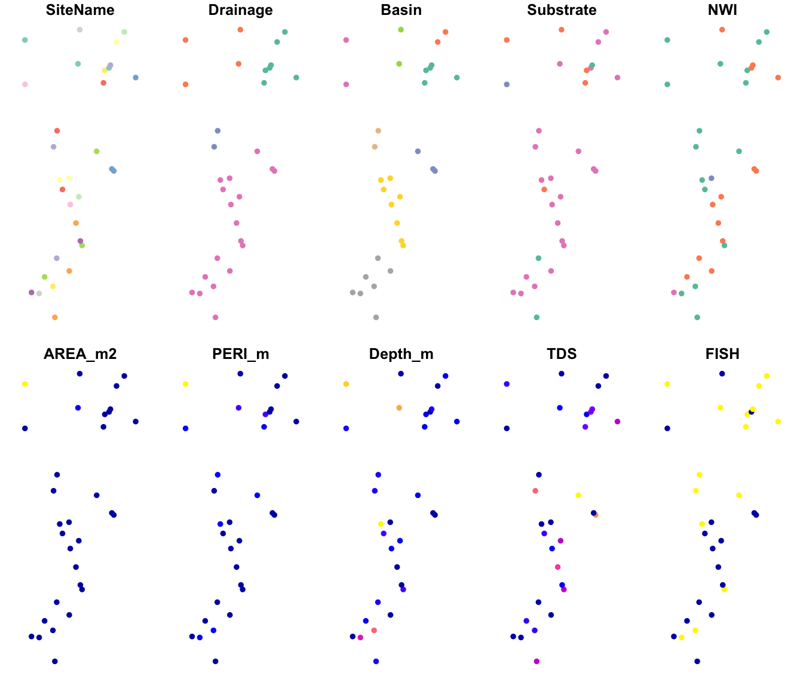
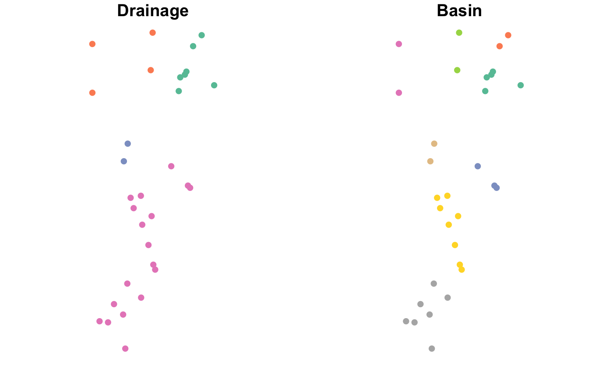
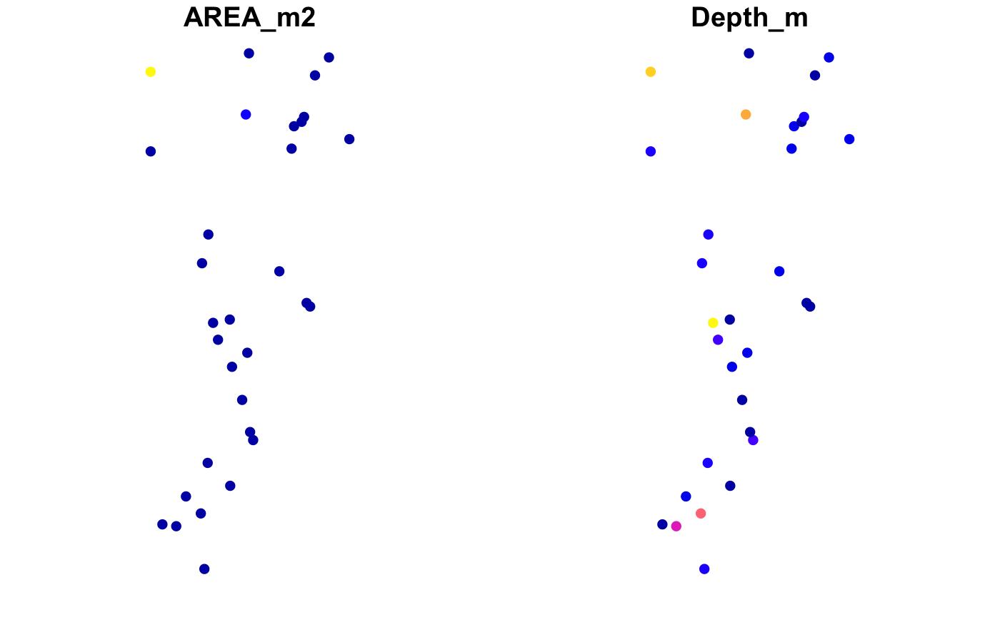
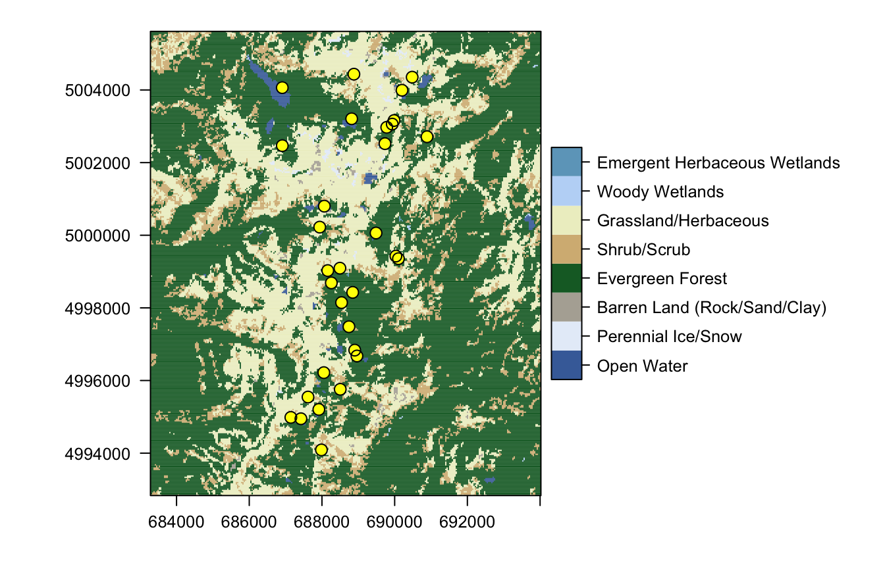

Week2_bonus_vignette.RmdThis bonus material expands the Worked Exakmple to show:
Try modifying the code to import your own data!
While ‘sp’ was a major achievement, it is being replaced now by ‘sf’, which is short for “simple feature”. The conversion is easy. The resulting S3 object is a data frame and also an ‘sf’ object.
## [1] "sf" "data.frame"If we use ‘plot’ on this ‘sf’ object, it will plot site attribute data in space! Here we set the point character ‘pch’ to a filled circle, which is symbol #16.
For an overview of ‘pch’ symbol numbers, and colors, check: http://vis.supstat.com/2013/04/plotting-symbols-and-color-palettes/
## Warning: plotting the first 10 out of 17 attributes; use max.plot = 17 to plot
## all
This is pretty cool! Let’s have a closer look at some of the variables.
Note: To learn about options for the ‘plot’ function for ‘sf’ objects, access the help file by typing ‘?plot’ and select ‘Plot sf object’.

Just in case you want to know how you could get your results into a GIS. This is really easy with the ‘sf’ package. The following code may produce a warning that column names were abbreviated, and writes the component files for the ESRI shapefile into the pre-existing folder ‘output’ (the first line will create it if does not exist yet). Remember to remove the hashtags ‘#’ to uncomment the code before running it.
The argument ‘delete_dsn’ specifies whether any existing file with the same name should be deleted first (i.e., overwritten).
#require(here) #if(!dir.exists(paste0(here(),"/output"))) dir.create(paste0(here(),"/output")) #st_write(Sites.sf, paste0(here(),"/output/Sites.shp"), delete_dsn = TRUE)
Now to a more tricky topica. Recall that the last raster layer in the Worked Example, ‘nlcd’, contains categorial land cover data that are coded numerically. The ‘raster’ package actually misinterpreted them as numeric data.
Let’s again extract the categorical raster layer into a new object ‘NLCD’.
## class : RasterLayer
## dimensions : 426, 358, 152508 (nrow, ncol, ncell)
## resolution : 30, 30 (x, y)
## extent : 683282.5, 694022.5, 4992833, 5005613 (xmin, xmax, ymin, ymax)
## crs : +proj=utm +zone=11 +datum=NAD83 +units=m +no_defs +ellps=GRS80 +towgs84=0,0,0
## source : memory
## names : nlcd
## values : 11, 95 (min, max)Then we use function ‘ratify’ to tell R that this is a categorical map (factor) that needs a ‘raster attribute table’ (rat). Nothing to do with rats…
Then create the raster attribute table from the factor levels. This is simply a vector with all factor levels present in ‘NLCD’. The levels are codes as numbers between 11 and 95. Here’s the legend information: https://www.mrlc.gov/nlcd06_leg.php
## ID
## 1 11
## 2 12
## 3 31
## 4 42
## 5 52
## 6 71
## 7 90
## 8 95Let’s add some columns with labels and predefined colors (using hex color code). A color table (“Colortable_LULC.csv”) is already in the data folder.
It has more rows than we need, because not all US land cover classes occur in the study area. We need to make sure the colors and cover types are stored as ‘character’, because the missing factor levels would later create problems.
ColTab <- read.csv(system.file("extdata", "Colortable_LULC.csv", package = "LandGenCourse"), header=TRUE) ColTab$color <- as.character(ColTab$color) ColTab$attribute <- as.character(ColTab$attribute) ColTab
## value color attribute
## 1 11 #456DA8 Open Water
## 2 12 #E6EEF9 Perennial Ice/Snow
## 3 21 #E1CBCD Developed, Open Space
## 4 22 #DC9786 Developed, Low Intensity
## 5 23 #F40100 Developed, Medium Intensity
## 6 24 #B00206 Developed, High Intensity
## 7 31 #B2AEA3 Barren Land (Rock/Sand/Clay)
## 8 41 #6BA95C Deciduous Forest
## 9 42 #16692E Evergreen Forest
## 10 43 #B9CA8F Mixed Forest
## 11 51 #AD9439 Dwarf Scrub
## 12 52 #D5B883 Shrub/Scrub
## 13 71 #EDEFCA Grassland/Herbaceous
## 14 72 #D3D27C Sedge/Herbaceous
## 15 73 #A5CD53 Lichens
## 16 74 #88B8A1 Moss
## 17 81 #DED73E Pasture/Hay
## 18 82 #AD722C Cultivated Crops
## 19 90 #BED8F6 Woody Wetlands
## 20 95 #6EA5C4 Emergent Herbaceous WetlandsNow we need to match the codes in ‘NLCD.rat’ and ‘ColTab’ and extract the additional variables for the land use categories that occur in NLCD. We can use the function ‘merge’ to do this.
Finally we tell R that the factor levels of NLCD are defined in ‘rat’, and R stores the information in the slot ‘NLCD@data@attributes’.
rat <- merge(rat, ColTab, by.x="ID", by.y="value", all=FALSE, sort=TRUE) levels(NLCD) <- rat NLCD@data@attributes
## [[1]]
## ID color attribute
## 1 11 #456DA8 Open Water
## 2 12 #E6EEF9 Perennial Ice/Snow
## 3 31 #B2AEA3 Barren Land (Rock/Sand/Clay)
## 4 42 #16692E Evergreen Forest
## 5 52 #D5B883 Shrub/Scrub
## 6 71 #EDEFCA Grassland/Herbaceous
## 7 90 #BED8F6 Woody Wetlands
## 8 95 #6EA5C4 Emergent Herbaceous WetlandsNow we can use the function ‘levelplot’ (package ‘rasterVis’) to plot the land cover map with the correct color scheme and legend. We will overlay the sampling locations, using yellow circles with black outlines.
This code uses advanced plotting ‘language’, where we first define ‘Map’ as the levelplot of the categorical map. The argument ‘att’ specifies which column in the ‘rat’ should be used for the labels, ‘colorkey’ scales the size of the legend, and ‘col.regions’ defines the color scheme.
Then, we can plot ‘Map’ simply by writing its name.
Map <- levelplot(NLCD, att='attribute', colorkey=list(height=0.5), col.regions=NLCD@data@attributes[[1]]$color) Map
Additional layers are added to the map with ‘+ layer()’: first we add a layer with the yellow filled circles at the sampling locations, then another layer with the black symbol outlines.
Sites.sp <- ralu.site Map + layer(sp.points(Sites.sp, pch=16, col="yellow", cex=1.1)) + layer(sp.points(Sites.sp, pch=1, col="black", cex=1.1))
